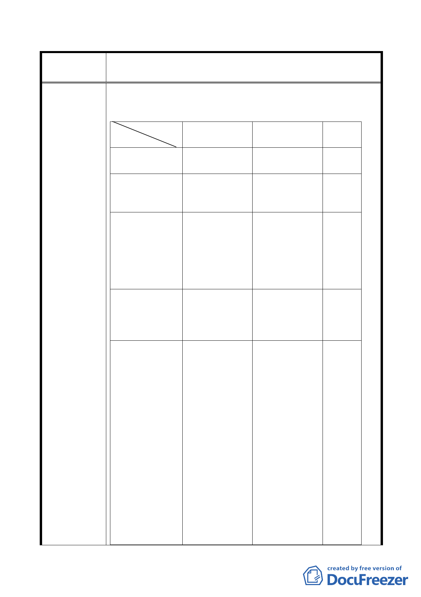

修訂本市都市計畫「臺北市山坡地開發建築要點」為「臺北市
案 名 都市計畫劃定山坡地開發建築管制規定」案
不同，最大的不同為市地重劃與區段徵收，不涉及房屋
興建，而旨揭山坡地開發建築管制規定是直接申請房屋
興建（詳如旨揭公展修正條文六、七）詳如下表：
山坡地開發建 市地重劃
備註
築管制規定
土地使用分區
？ 住宅區、工業
管制
區、商業區
土地開發模式 20,000 平方公 政府訂定市地
尺以上山坡地 重劃區或區段
詳如公告圖 徵收區
公用設施開闢 申請基地自設 依平均地權條
公設無硬性規 例規定 10 項
定 公共設施如國
中、國小、公
園、綠地… 等
硬性規定
地主負擔
負擔該自用公 地主負擔約 45
共設施及回饋 ％依平均地權
金約 3～6％ 條例及都市細
部計畫規定
作業程序概要 申請開發許可 申請籌備會→ 市地重
→核發建照 徵求地主同意 劃作業
→環評通過公 程序繁
告→都市細部 瑣不下
計畫兩級都委 百餘
會通過公告→ 項，茲
重劃計畫書通 簡略概
過公告→公共 要就要
工程設計→土 花好幾
地分配公告→ 年的時
公共工程施作 間才能
完竣→移交各 完成，
主管機關接管 最後土
維護→土地所 地所有
有權人領回重 權人只
劃後之建地 領回空
- 14 -